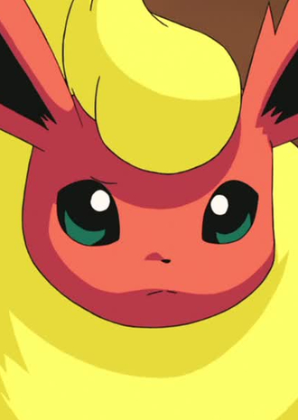

|
Yuuki Hayashi is a Japanese voice actor. He voiced in Fullmetal Alchemist Brotherhood and Beyblade Burst.
|
|---|
| |
Denny Brosh | Fullmetal Alchemist Brotherhood | Denny Bosh is the partner of Maria Ross. He is nosy and lazy, but has an enormous inflatuation with his partner. He is very sensitive to criticism. |
|  | Flareon | Pokemon Black and White: Rival Destinies | Flareon is the one of Eevee's evolved forms. It is a Pokemon from Kanto region. Flareon stores and heats inhaled air a sac and then exhales it as fire. Yuuki Hayashi voices Vigil's Flareon. |